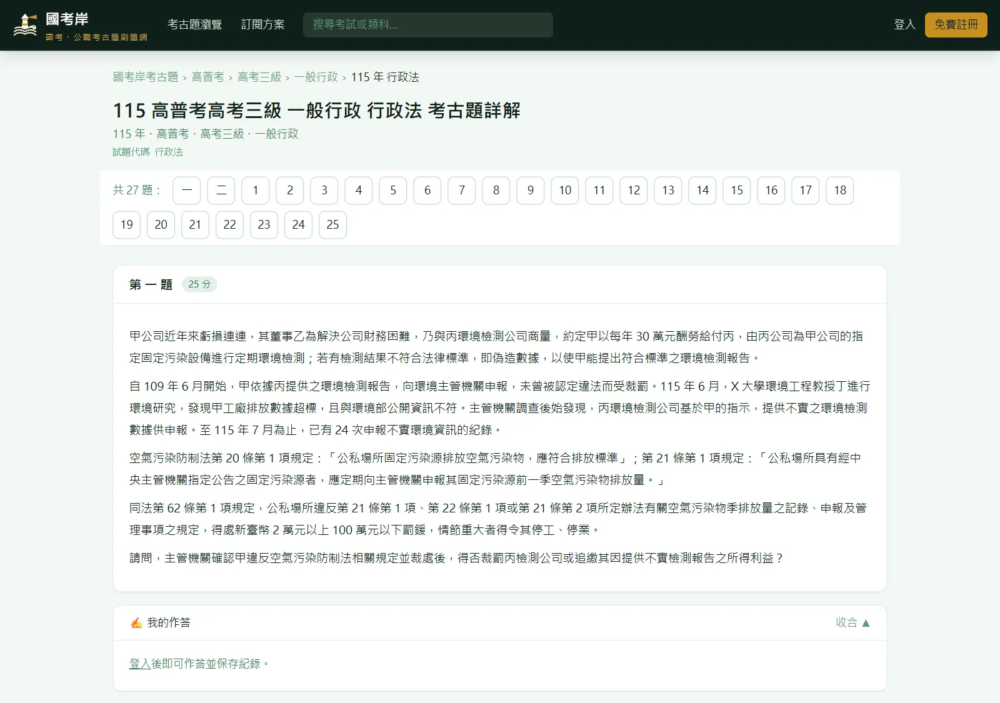
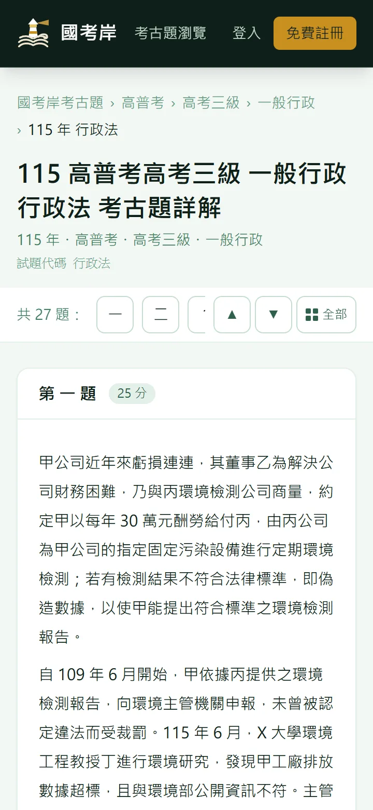
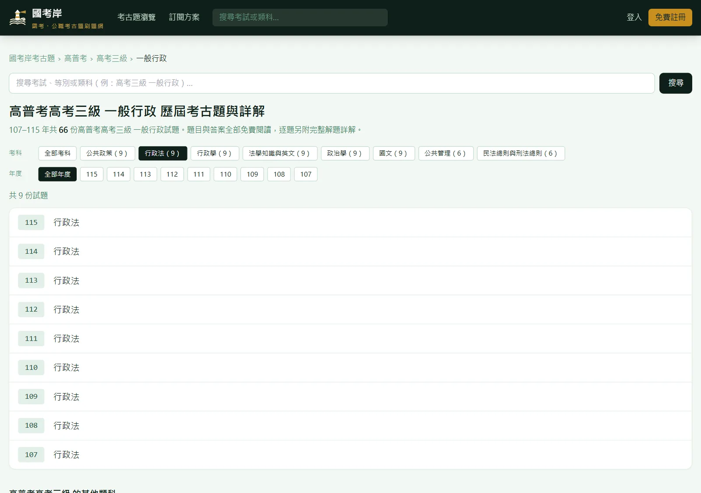
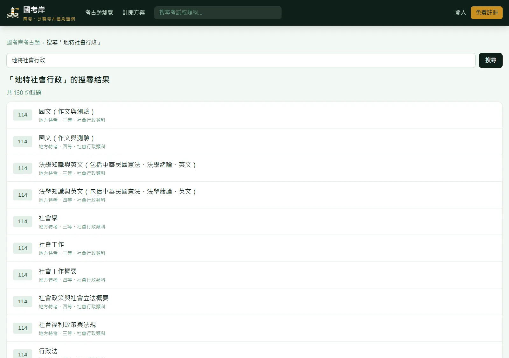
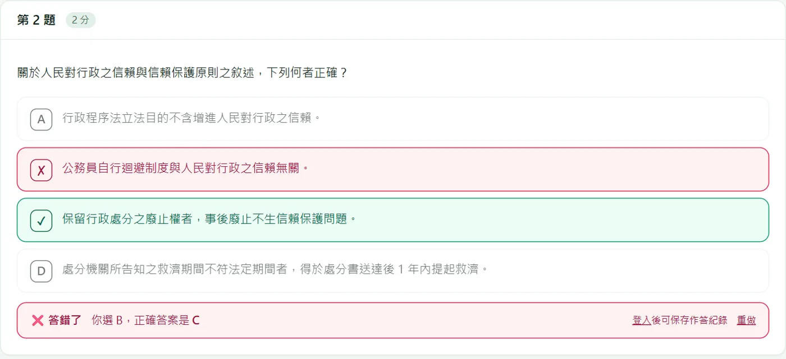
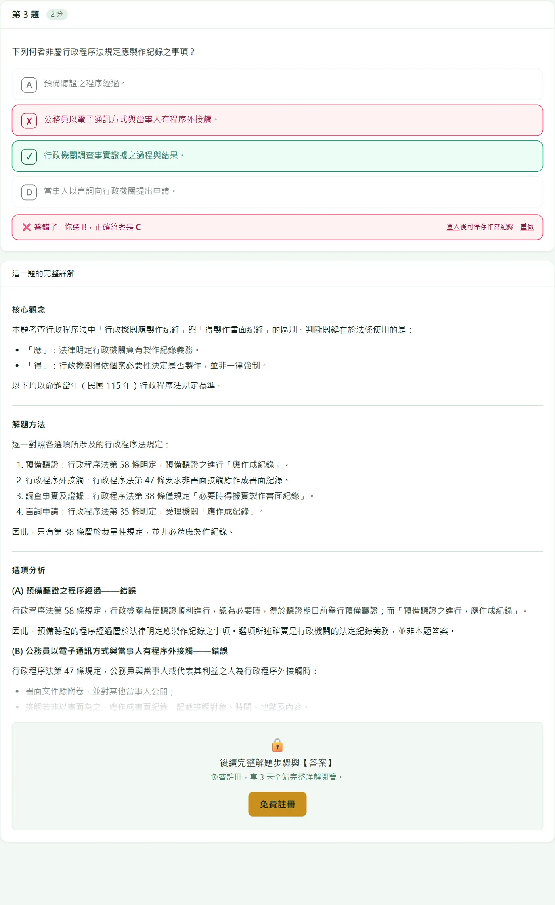
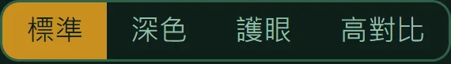
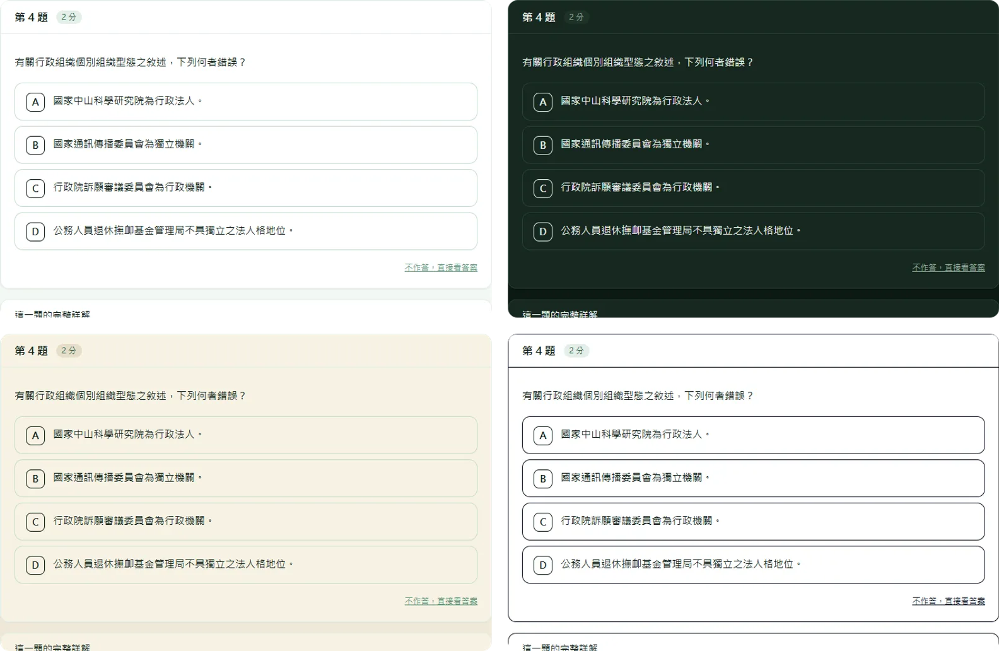
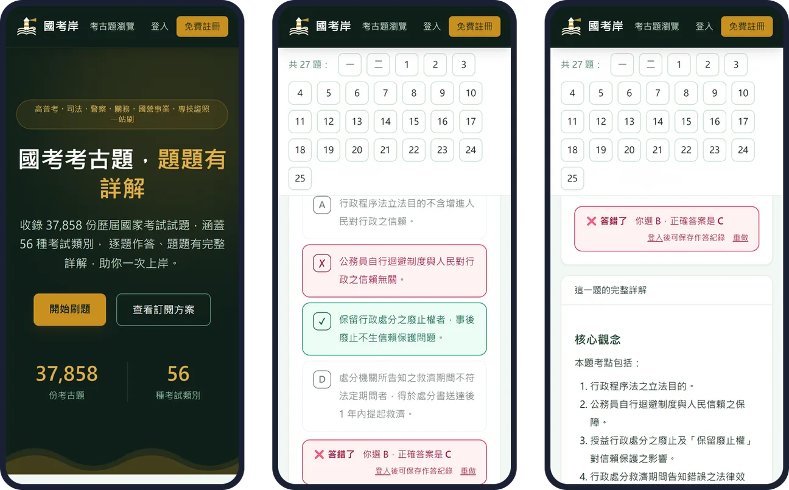
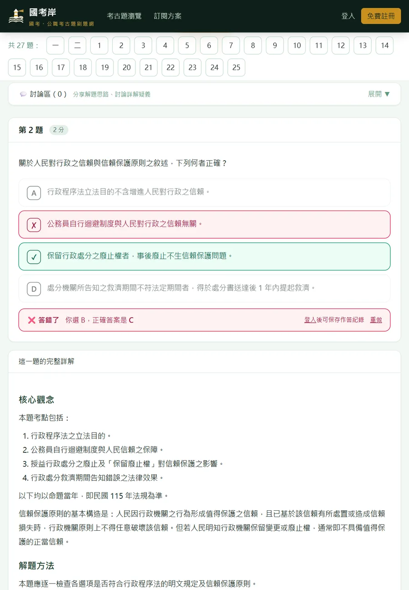

國考考古題，一題一題練到會。
107 到 115 年、56 種考試、37,858 份考卷，整份拆成單題。選擇題點了就知道對錯，每題附完整詳解。


國考岸是什麼
國考岸是台灣國家考試與公職招考的考古題練習網站。每份考卷都拆成一題一題：選擇題直接點選作答、立刻對答案， 申論題可以先寫下自己的架構，再對照這一題的完整詳解。 從高普考、地方特考、初等考試，到司法、調查局、警察、關務、鐵路，再到台電、經濟部聯招、中華郵政等國營事業招考， 一個帳號全部通用，跨考、轉考不必分開準備。每年考選部公布試題後持續補上新一年的考卷。
三下就找到你要考的那份卷
從考試名稱一路點到等別與類科，考科和年度一鍵篩選，同一類科歷年的考卷一次列出來。

考試、等別、類科，一層一層點進去
首頁先選考試，例如高普考，再選高考三級，最後選一般行政。類科頁上方的考科與年度按鈕可以一鍵篩選，再按一次就取消。行政法 107 到 115 年的 9 份卷，一頁看完。

打簡稱也找得到
搜尋框輸入「地特社會行政」「司法特考民法」「台電」就能直接找到考卷。
搜尋小技巧
- 考試簡稱直接打：高考、普考、地特、司法特考、台電都認得。
- 考試＋類科＋科目可以連著打，不用空格，例如「司法特考民法」。
- 加上年度縮小範圍，例如「112 普考會計」。
- 台、臺通用，打哪一個都查得到。

選擇題，點了就知道對錯
國考大半是選擇題，所以選項做成可以直接點的按鈕。點下去立刻標出你選的對不對、正確答案是哪一個， 不用翻到卷末對答案。答案依考選部公告。
怎麼用
- 直接點選項作答，答錯的選項標紅、正確答案標綠。
- 不想作答就按 不作答，直接看答案。
- 按 重做 可以把這一題再練一次。
- 登入後作答紀錄會保存，換裝置也看得到。

每一題都有完整詳解
詳解照「核心觀念、解題方法、選項分析、解題技巧、答案」的順序寫。 選擇題會把每個選項為什麼對、為什麼錯都講清楚，並寫出依據的法條。 申論題附上作答架構與示範作答，知道閱卷老師想看到什麼。
法規題特別注意
- 法律科目的詳解會註明「以命題當年法規為準」，修法前後的差異不會混在一起。
- 發現有誤，在詳解下方按 詳解有誤？回報錯誤／提出修改建議，站方的回覆會出現在 我的帳戶。
卡住的時候，不只是看答案
詳解告訴你這題怎麼解；下面三個功能幫你找出自己為什麼不會，並把整塊觀念補起來。
AI 盲點診斷
把申論題的作答打字送出，或拍下手寫的答案上傳，系統會對照標準解法，指出漏掉的爭點、缺的觀念，還有下次怎麼自己檢查。寫法跟詳解不同但言之成理，一樣判定正確。
- 在 我的作答 寫下過程，或按 上傳手寫作答照片（最多 2 張）。
- 按 AI 找盲點。
本題相關概念總複習
把這一題背後的整塊觀念整理成考前複習：這題在考什麼、必懂的觀念、常考的變形、容易混淆的地方，最後附上幾個自我檢查的問題。在題目下方展開就能看。
討論區與舉手發問
每一題下方都有討論區，可以分享自己的解法、討論詳解的疑問。想直接問站方就用 舉手發問，回覆會出現在「我的帳戶」。
手寫照片只用於這一次診斷，不會保存在伺服器；診斷結果會留在該題，下次回來還看得到。
四種顯示模式，久讀不累
頁面最下方的「顯示模式」一鍵切換，不用登入，選一次就會記住。

深色深綠底，晚上刷題不刺眼。
護眼米黃底，長時間讀法條比較舒服。
高對比純白底、加深文字與框線，視力不好或在戶外強光下也看得清楚。

手機、平板都順手，通勤也能刷一題
版面會跟著螢幕調整：題號列自動換行、選項按鈕夠大好點、上傳照片直接開相機，直拿橫拿都能用。 上班族下班後、午休空檔，打開就能接著練。


零碎時間這樣用
一次十題選擇題點了就對答案，十分鐘就能刷完一小段。
先寫再看通勤時在手機寫申論架構，晚上用電腦再對照詳解，作答紀錄跟著帳號走。
把題目傳給自己從題號列跳到那一題再複製網址，換裝置直接打開同一題。
換個顯示模式晚上切深色，戶外切高對比。
安裝到主畫面，像 App 一樣開
- iPhone、iPad：用 Safari 打開國考岸，點 分享，選 加入主畫面。
- Android 或電腦：瀏覽器選單選 安裝應用程式 或 加到主畫面；登入後「我的帳戶」頁也有安裝按鈕。
- 之後從主畫面點國考岸圖示，就像 App 一樣全螢幕開啟。
使用方法
登入只要 Google、Facebook 或 LINE 一鍵完成，不用另外設定密碼。
找考卷
首頁選考試，或在搜尋框打「地特社會行政」「112 普考會計」。
逐題作答
選擇題直接點選項；申論題在「我的作答」寫下架構。
對照詳解
看核心觀念、法條依據、選項分析與答案。
找出盲點
卡住就按「AI 找盲點」，或展開「本題相關概念總複習」。
討論或發問
在討論區分享解法，或用「舉手發問」直接問站方。
收錄範圍：56 種考試，107 到 115 年
國家考試之外，也收錄國營事業、升資考試與金融證照，一個帳號全部通用。
熱門類科考古題
直接點進類科頁，該類科所有年度與考科的考卷都在同一頁。